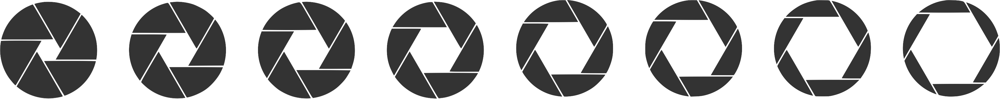
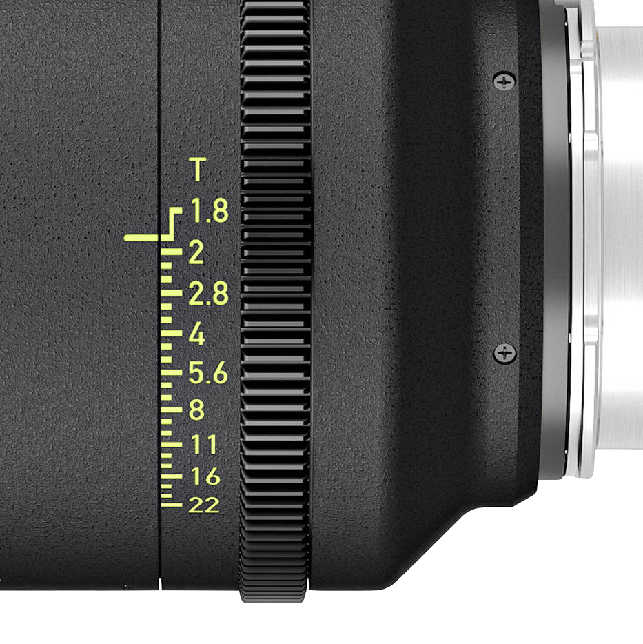
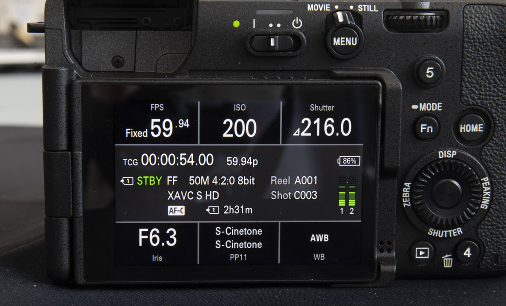

This paper aims to provide a simple yet accurate explanation

The aperture is an adjustable diaphragm within a lens that controls how much light passes through. Although the diaphragm is formed by straight blades that create a polygonal opening, the entrance pupil—the virtual image of this opening viewed through the front elements—appears roughly circular. Changing the aperture diameter alters the entrance pupil’s area. Each one-stop change corresponds to a doubling or halving of the aperture’s area, thereby controlling the amount of light that reaches the sensor.
The f-number, also known as focal ratio or f-stop, is defined as the ratio of a lens’s focal length to the diameter of its entrance pupil (effective aperture). The formula is:
where f is the focal length and D is the diameter of the entrance pupil.
Because this is a ratio, f-numbers are conventionally written with “f/” in front.
For example, a 50mm lens set to f/2.0 has an effective aperture diameter of 25mm.
As emphasized earlier in bold, exposure depends on the aperture’s area. Since the area of a circle scales with the square of its diameter, doubling the amount of light requires increasing the diameter by a factor of √2(≈ 1.414...), while halving the light requires dividing the diameter by the same factor.
This relationship gives rise to the geometric progression of f-numbers. Each full stop is √2 times the previous one. The formula is:
where AV is the aperture value.
The sequence produces exact integers (e.g., 1.0, 2.0, 4.0) and irrational numbers (e.g., 1.414…, 2.828…), with the latter rounded to the standard f-number markings found on lenses.
The table below lists Aperture Value, the rounded practical f-numbers, and the calculated exact value to four decimal places Aperture Value should not be confused with Exposure Value (EV).
| AV | 0 | 1 | 2 | 3 | 4 | 5 | 6 | 7 | 8 |
|---|---|---|---|---|---|---|---|---|---|
| N | 1.0 | 1.4 | 2.0 | 2.8 | 4.0 | 5.6 | 8.0 | 11.0 | 16.0 |
| Calculated | 1.0 | 1.414… | 2.0 | 2.828… | 4.0 | 5.657… | 8.0 | 11.314… | 16.0 |
So far, we have only examined the geometric progression of f-numbers in full-stop increments. In practice, however, it is also common to use one-third-stop and half-stop values. The tables below list portions of the geometric sequence for these increments, similar to the previous table.
| AV | 0 | 1/2 | 1 | 11/2 | 2 | 21/2 | 3 | 31/2 | 4 |
|---|---|---|---|---|---|---|---|---|---|
| N | 1.0 | 1.2 | 1.4 | 1.7 | 2.0 | 2.4 | 2.8 | 3.3 | 4.0 |
| Calculated | 1.0 | 1.189… | 1.414… | 1.682… | 2.0 | 2.378… | 2.828… | 3.364… | 4.0 |
| AV | 0 | 1/3 | 2/3 | 1 | 11/3 | 12/3 | 2 | 21/3 | 22/3 |
|---|---|---|---|---|---|---|---|---|---|
| N | 1.0 | 1.1 | 1.2 | 1.4 | 1.6 | 1.8 | 2.0 | 2.2 | 2.5 |
| Calculated | 1.0 | 1.122… | 1.260… | 1.414… | 1.578… | 1.782… | 2.0 | 2.245… | 2.520… |
Full-stop increments are derived from this exact sequence:
Half-stop increments are derived from this exact sequence:
One-third-stop increments are derived from this exact sequence:
Still-photography lenses are rated in f-stops, which assume a perfect lens with 100% light transmittance. Cinema lenses, however, are rated in T-stops (transmission stops) to account for the light lost as it passes through the glass. A T-stop is essentially an f-number adjusted for the lens’s light-transmission efficiency.
A lens with a T-stop of N delivers the same image brightness as an ideal lens with 100% transmittance and an f-number of N. In simpler terms, the T-stop represents the actual light reaching the sensor or film and corresponds to the ideal theoretical f-number, whereas f-stop does not, since no real photographic lens transmits 100% of the light.
A particular lens's T-stop is given by dividing the f-number by the square root of the transmittance of that lens:
For example, an f/2.0 lens with transmittance of 75% has a T-stop of 2.3:
In cinematography, f-number notation differs slightly from that of still photography. Cinema lenses typically feature markings in fractional-stop increments, as can be seen from the image of a very popular cinema lens with one-third stop increment markings.
These precisely spaced barrel engravings allows for both accurate exposure adjustments and smooth manual iris pulls that meet the demands of motion picture production.

By contrast, still-photo lenses were traditionally marked only at full stops (f/2.8, f/4, etc.), and many designs even skipped some values altogether, particularly in compact lenses. Intermediate values could still be set manually by rotating the aperture ring to a position between markings, but they were not engraved on the lens. This approach reflected both the need for compact lens designs and the fact that photographers generally did not require such fine increments to be marked.
With the advent of digital still cameras, aperture control became electronically driven by the camera body. This allowed fractional-stop adjustments to be set with precision and displayed in the viewfinder or LCD (e.g., f/3.2, f/3.5). As a result, still-photo lenses did not need engraved fractional markings, since the electronic display provided that information.
This difference in notation has led cinematographers to call out fractional stops as full-stop plus EV (e.g., T2.8 plus ¹⁄₃), whereas photographers typically refer only the N value itself (e.g., f/3.2, which corresponds to f/2.8 plus ¹⁄₃).
Since the emergence of hybrid stills-and-video cameras, however, many photo-lens manufacturers have begun marking their lenses in fractional-stop increments to better support video production.

From the images above, the one on the left shows a typical layout of an ARRI digital cinema camera, where iris information is displayed in full-stop plus 1/10-stop increments. The image on the right shows the layout of a hybrid stills/video camera, which instead displays the actual f-number directly, rather than a full-stop value plus fractional notation.